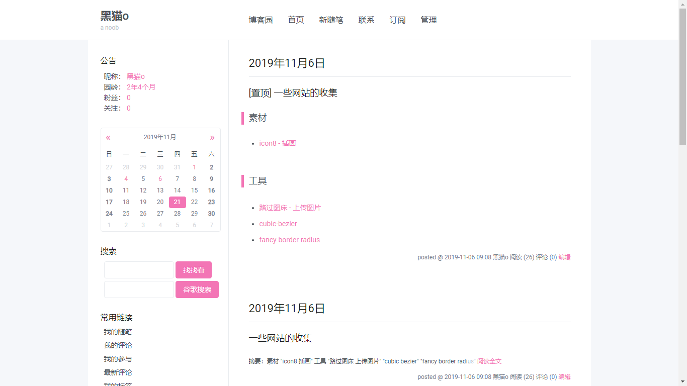
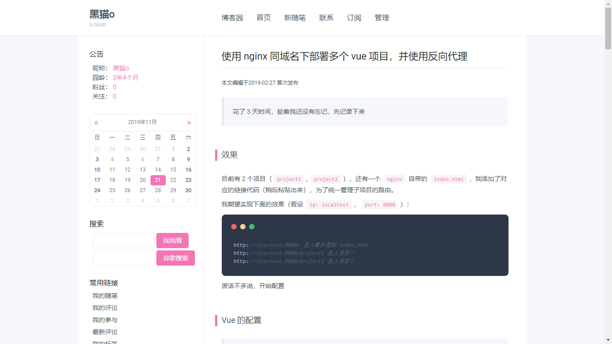
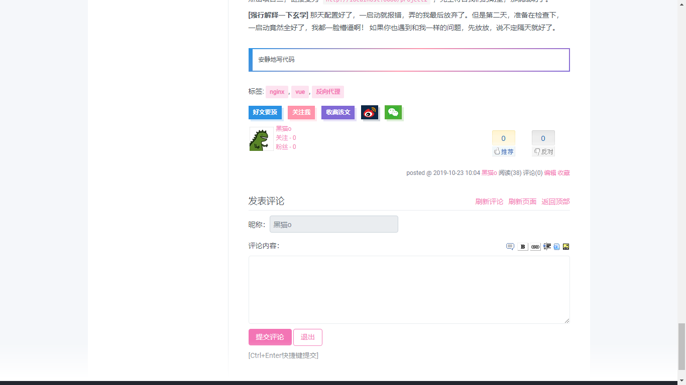
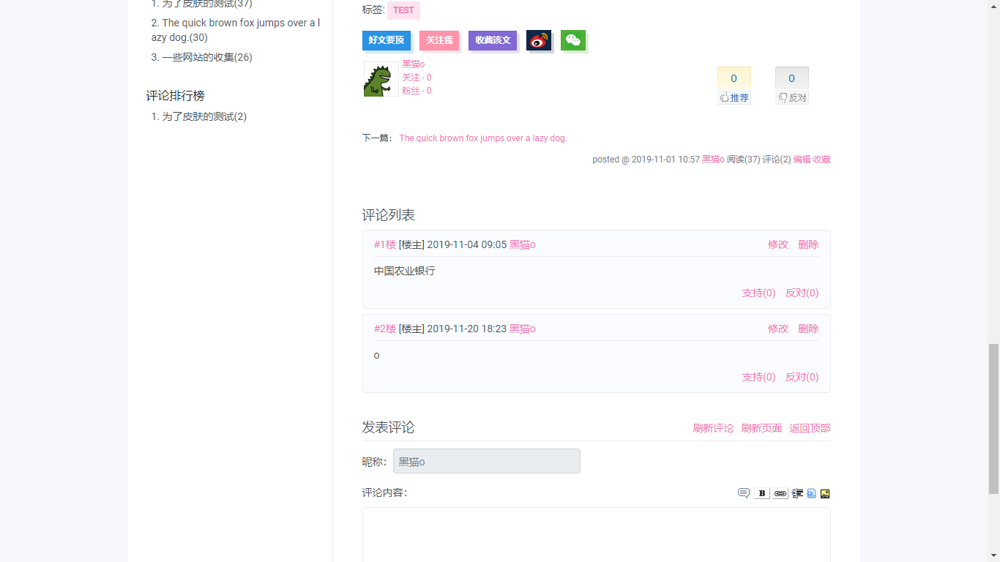
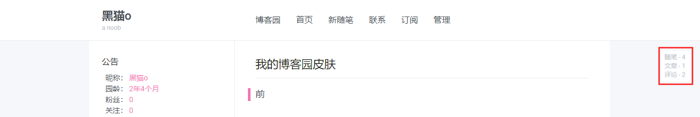

原文连接:https://www.cnblogs.com/blackcat/p/11903805.html
只对主流浏览器兼容（IE: 都他妈别看我啊😡）
最新（2019/11/25）
适配了一些手机的样式（其实就是隐藏了侧边栏而已😂），如果你懒得弄效果，可以直接忽略。
如果需要侧边栏可以伸缩和回到顶部功能，你需要将以下代码键入到页首 HTML 代码的输入框中
<div class="nav__toggle [ hamburger hamburger--squeeze ]">
<div class="hamburger-box">
<div class="hamburger-inner"></div>
</div>
</div>
<div class="scroll-top" title="回到顶部">
<svg viewBox="0 0 1024 1024" focusable="false" width="1em" height="1em" fill="currentColor" aria-hidden="true">
<path d="M858.9 689L530.5 308.2c-9.4-10.9-27.5-10.9-37 0L165.1 689c-12.2 14.2-1.2 35 18.5 35h656.8c19.7 0 30.7-20.8 18.5-35z"></path>
</svg>
</div>
<script>
(function(window, $, document, undefined) {
if (typeof $ == undefined) return
var page = {
cache: function() {
page.els = {}
page.els.$window = $(window)
page.els.$body = $('body')
page.els.$top = $('.scroll-top')
},
init: function() {
page.cache()
page.on_resize()
page.on_scroll()
page.detectMobile()
page.scrollToTop()
page.collapseSidebar()
},
on_resize: function() {
page.els.$window.on('resize', function() {
page.detectMobile()
}).resize()
},
on_scroll: function() {
page.els.$window.on('scroll', function() {
if (page.els.$window.scrollTop() > 120) {
$('.scroll-top').fadeIn()
} else {
$('.scroll-top').fadeOut()
}
})
},
detectMobile: function() {
page.els.$body.removeClass('is-side-open')
$('.nav__toggle').removeClass('is-active')
},
collapseSidebar: function() {
$('.nav__toggle').on('click', function() {
$('.nav__toggle').toggleClass('is-active')
if ($('.nav__toggle').hasClass('is-active')) {
page.els.$body.addClass('is-side-open')
} else {
page.els.$body.removeClass('is-side-open')
}
})
},
scrollToTop: function() {
$('#comment_nav').find('a[href^="#top"]').hide()
$('.scroll-top').click(function(){
$('html, body').animate({scrollTop : 0}, 300)
return false
})
}
}
$(document).ready( page.init() )
})(window, jQuery, document)
</script>前
当我发现博客园可以自己定制样式就转到这里。在寻找一些皮肤，发现鲜有让我满意的皮肤，所以我就打算自己制作一款，也正好我爱捣鼓这些玩意。
我选择了官方推荐的模板 Custom 进行制作，所以如果你使用我的模板，请务必在博客设置中调整模板为 Custom。
官方推荐的模板，这里请允许我吐槽
Custom这个模板，应该是年代久远的代码，也没有开发人员去优化重构下页面骨架，主要有一些页面是一样的，但是可能时间久了，里面的骨架竟然不一样，不一样啊😱，本人又有代码洁癖症，想着如何最大化的公用代码，结果真的是花了大时间。
因为平时也需要工作，我一般会抽一些空余时间来制作，所以这款皮肤持续时间有些长了。最让人尴尬的是大概我做了40%，发现了一个家伙（非贬义）制作的皮肤比我优秀多了（底部有链接，也可以自行寻找），想着干脆偷懒直接用吧，但是半途而废又不是我的风格，所以继续扑腾。
终于皇天不负有心人😭，昨天晚上9012/11/21我终于写好了pc端的了（额，适配手机的代码还没有搞定😅 ）。
使用
模板请选择
Custom模板在博客的设置选项粘贴链接上的代码即可
兼容
2019/11/26
IE的flex特性，我是服气了，怕了，直接放弃对IE的兼容（万岁！！！）
如果你需要兼容IE，慎用
这里可能有人看不懂，简单点说我就是用了一些现在9012/11/21比较新的css技术（其实就是圆弧和弹性布局），所以兼容上只有 IE10以上了（如果你不是很懂浏览器，那么直接选择谷歌或者360适配成谷歌内核的即可）。
截图





定制
粉色做主题色是因为我比较骚 😄 ，开玩笑。
如果你不喜欢这个主题色，可以直接到我的项目- GITHUB上拉取下来自行定制。
写文档实在是花时间，所以目前还没有完善。如果你确定要定制请查看源码，我使用的是 scss 编写，分类简单化了，所以还是清晰明了的。后期我会补全注释，再次优化。
小问题
关于
这玩意位置让我很头疼，我决定隐藏，看不到心不烦。当然，展示出来也是可以的，但是需要自己配置了。
底部的广告
想着弄的博客干净一些，我就把广告隐藏了，如果必须放出广告位，还请私信我，我会及时修改。
如果让我给设计下排版布局那真是非常乐意哈，一直想自己做个模板，奈何找不到入口😅
结
放一些不错的博皮链接，非广告，侵删
作者：GShang 【就是这位，很牛逼】
作者：BNDong
https://github.com/BNDong/Cnblogs-Theme-SimpleMemory
附
本文乃原创，转载请注明原文地址：https://www.cnblogs.com/blackcat/p/11903805.html
额，应该不需要转载这篇文章吧，感觉也没什么用处 😄